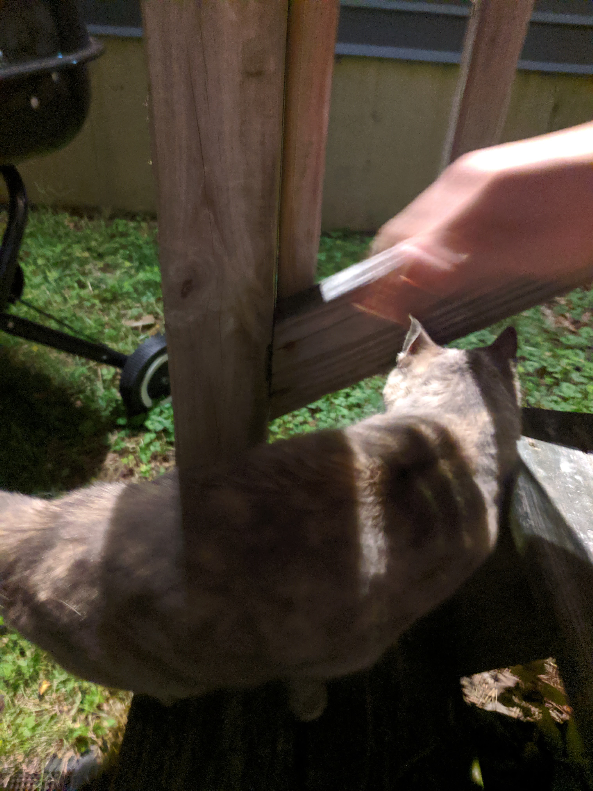

Since my resume didn't really fall under any other categories, here we are! And because you made it this far, here's a picture of a feral cat (Her name is Mia) we found and provided shelter for. (Can you tell I'm a sucker for cats?)